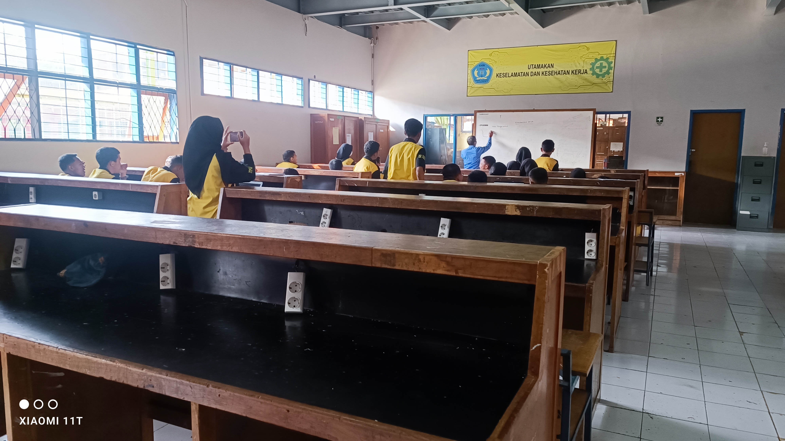
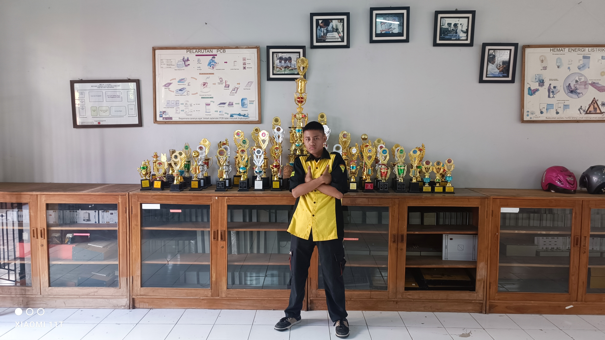

Kegiatan Di Bengkel Elektronika
-
Instalasi Listrik 
Instalasi listrik adalah suatu perlengkapan yang digunakan untuk menyalurkan tenaga listrik dari sumber listrik ke peralatan- peralatan yang membutuhkan tenaga listrik. Jadi, instalasi listrik itu snediri memang penting dilakukan, terupata untuk konstruksi bangunan yang sudah direncanakan sebelumnya. Sumber listrik yang yang bisa diberikan untuk pemasangan listrik pada suatu bangunan konstruksi itu sendiridapat berasal dari genset, dari PLN (Perusahaan Listrik Negara) atau apapun yang bisa menghasilkan tenaga listrik lainnya. Misalnya seperti misalnya batere, solar cell dan sebagainya. Sementara itu, peralatan yang membutuhkan tenaga listrik pun seperti yang Anda tahu. itu pun sangat banyak. Hal itu dapat dimulai dari peralatan di rumah tangga, di kantor, di industri, di kendaraan dan lain sebagainya
-
Pengelasan 
Las busur listrik atau umumnya disebut dengan las listrik adalah termasuk suatu proses penyambungan logam dengan menggunakan tenaga listrik sebagai sumber panas. Jenis sambungan dengan las Iistrik ini adalah merupakan sambungan tetap. Las tistrik ini menggunakan alektroda berselaput sebagai bahan tambah. Busur listrik yang terjadi diantara ujung elektroda dan bahan dasar akan mencairkan ujung elektroda dan sebagian bahan dasar. Selaput elektroda yang turut terbakar akan mencair dan menghasilkan gas yang melindungi ujung elektroda, kawah Ias, busur Iistri dan daerah Ias di sekitar busur listrik terhadap pengaruh udara luar. Cairan selaput elektroda yang membeku akan menutupi permukaan Ias yang juga berfungsi sebagai pelindung terhadap pengaruh luar.
-

Kegiatan Belajar Mengajar(Teori)
Prestasi
foto Prestasi dan piala yang pernah di raih Jurusan Elektronika industri SMKN 1 KATAPANG